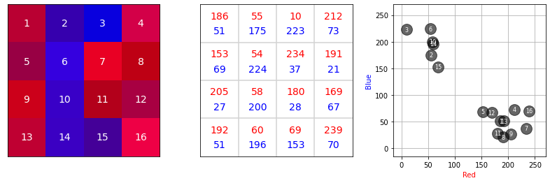
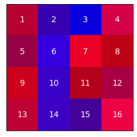
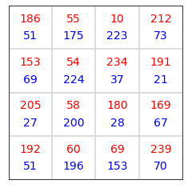
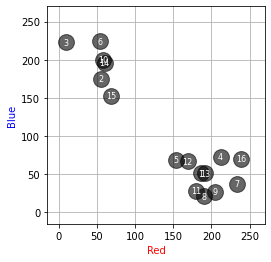
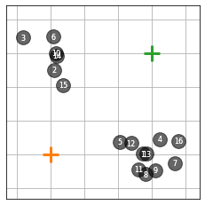
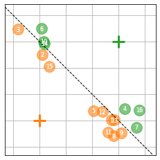
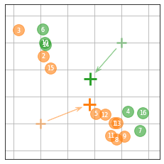
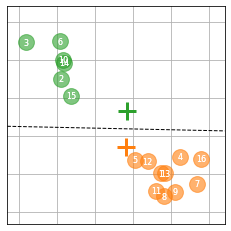
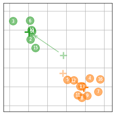

K-means#
import matplotlib.pyplot as plt
import numpy as np
# import matplotlib as mpl
# mpl.rcParams['image.cmap'] = 'gray'
# # mpl.rcParams.update({'font.size': 22})
# Couleurs ds bandes
c1 = np.array([
[1, 0, 0, 1],
[1, 0, 1, 1],
[1, 0, 1, 1],
[1, 0, 0, 1],
])
c2 = np.array([
[0, 1, 1, 0],
[0, 1, 0, 0],
[0, 1, 0, 0],
[0, 1, 1, 0],
])
# Amplitude et bruit sur les bandes
def ab(c, o, a, s):
b = np.random.normal(loc=0, scale=s, size=c.shape)
b = np.round(b)
c = o + a*c + b
c = np.clip(c, 0, 255)
return c
c1 = ab(c1, 50, 150, 30)
c2 = ab(c2, 50, 150, 30)
# Construction de l'image couleur
N, _ = c1.shape
c0 = np.zeros((N,N))
img = np.array([c1, c0, c2])
img = np.moveaxis(img, 0, -1)
img = img / 256
# Affichage de l'image
def plot_image(ax):
ax.imshow(img)
ax.set_xticks([])
ax.set_yticks([])
for i in range(N):
for j in range(N):
ax.text(j, i, N*i+j+1,
fontsize=14, ha="center", va="center", color="w")
# ax.set_title('Image')
# Affichage des bandes
def plot_data(ax):
ax.imshow(c0, cmap="gray", vmin=-1, vmax=0)
ax.set_xticks([])
ax.set_yticks([])
for i in range(N):
for j in range(N):
ax.text(j, i-.2, f'{c1[i,j]:.0f}', fontsize=14, ha="center", va="center", color=[1, 0, 0])
ax.text(j, i+.2, f'{c2[i,j]:.0f}', fontsize=14, ha="center", va="center", color=[0, 0, 1])
for i in range(3):
ax.axvline(i+.5, color="lightgray")
ax.axhline(i+.5, color="lightgray")
# ax.set_title('Intensités')
# Affichage du nuage de points
def plot_scatter(ax, x, y, clr):
ax.scatter(x, y, color=clr, marker='o', s=250, alpha=.6)
for i in range(N):
for j in range(N):
plt.text(c1[i,j], c2[i,j], N*i+j+1,
fontsize=8, ha="center", va="center", color="w")
ax.axis('square')
ax.set_xlim([-15, 270])
ax.set_ylim([-15, 270])
ax.set_xlabel('Red', color=[1, 0, 0])
ax.set_ylabel('Blue', color=[0, 0, 1])
ax.set_axisbelow(True)
ax.grid(True)
# ax.set_title("Intensités dans l'espace (rouge, bleu)")
# Affichage de l'image
fig, axs = plt.subplots(1, 3, figsize=(14, 4))
plot_image(axs[0])
plot_data(axs[1])
plot_scatter(axs[2], c1, c2, [0, 0, 0])
plt.savefig("tout.pdf", bbox_inches='tight')
plt.show()

# Affichage des images séparées
fig, ax = plt.subplots(1, 1, figsize=(4, 4))
plot_image(ax)
plt.savefig("image.pdf", bbox_inches='tight')
plt.show()
fig, ax = plt.subplots(1, 1, figsize=(4, 4))
plot_data(ax)
plt.savefig("intensities.pdf", bbox_inches='tight')
plt.show()
fig, ax = plt.subplots(1, 1, figsize=(4, 4))
plot_scatter(ax, c1, c2, [0, 0, 0])
plt.savefig("scatter.pdf", bbox_inches='tight')
plt.show()



Algo des K-moyennes#
def affectation():
for i in range(16):
# Coordonnées du pixel
x = np.ravel(c1)[i]
y = np.ravel(c2)[i]
# Distance
d = np.zeros(K)
for k in range(K):
d[k] = np.sqrt( (x-centroids[k][0])**2 + (y-centroids[k][1])**2 )
# Classe
label[i] = np.argmin(d)
def majcentroides():
# Pour chaque classe...
for k in range(K):
# Coordoonées
idx = np.where(label==k)[0]
x = np.ravel(c1)[idx]
y = np.ravel(c2)[idx]
# Moyennes
centroids[k][0] = np.mean(x)
centroids[k][1] = np.mean(y)
def displaykmeans(title, step, color=None, old_centroids=None):
# Figure
fig, ax = plt.subplots(1, 1, figsize=(4, 4))
ax.grid(True)
ax.set_axisbelow(True)
# Frontière ?
if step == "A":
# Point central
middle_x = (centroids[0][0]+centroids[1][0]) / 2
middle_y = (centroids[0][1]+centroids[1][1]) / 2
# Pente
dx = centroids[0][0] - centroids[1][0]
dy = centroids[0][1] - centroids[1][1]
slope = -dx/dy
# Dessin
plt.axline(xy1=(middle_x, middle_y), slope=slope, linewidth=1, color="black", linestyle="--")
# Pour chaque classe...
for k in range(K):
# Coordoonées
idx = np.where(label==k)[0]
x = np.ravel(c1)[idx]
y = np.ravel(c2)[idx]
# Pixels
if np.any(color) == None:
plot_scatter(ax, x, y, clrs[k])
else:
plot_scatter(ax, x, y, color)
# Centroïdes
ax.scatter(centroids[k][0], centroids[k][1], marker='+', s=300, color=clrs[k], linewidth=3)
# Flèche des centroïdes ?
if step == "B":
# Ancien centroïde
ax.scatter(old_centroids[k][0], old_centroids[k][1], marker='+', s=200, color=clrs[k], linewidth=3, alpha=.4)
# Coordonnées de la flèche totale
x = old_centroids[k][0]
y = old_centroids[k][1]
dx = centroids[k][0] - x
dy = centroids[k][1] - y
L = np.sqrt(dx**2+dy**2)
theta = np.arctan(dy/dx)
if dx < 0:
theta = theta + np.pi
# Coordonnées de la flèche raccourcie de "space"
space = 30
L = L - space
x = x + space/2 * np.cos(theta)
y = y + space/2 * np.sin(theta)
dx = L * np.cos(theta)
dy = L * np.sin(theta)
# Dessin de la flèche
plt.arrow(x, y, dx, dy, width=.5, head_width=8, length_includes_head=True, color=clrs[k], alpha=.4, overhang=.5)
# Petite beauté
ax.set_xlabel("")
ax.set_ylabel("")
ax.xaxis.set_ticklabels([])
ax.yaxis.set_ticklabels([])
ax.xaxis.set_ticks_position('none')
ax.yaxis.set_ticks_position('none')
ax.set_title("")
# Enregistrement
plt.savefig(f"{title}.pdf", bbox_inches='tight')
plt.show()
K = 2
#centroids = np.array([[128, 64], [128, 192]])
centroids = np.array([[50, 50], [200, 200]])
label = np.concatenate([[0]*8,[1]*8])
#clrs = np.array([[1, 0, 0], [0, 0, 1]])
clrs = np.array(["C1", "C2"])
num = displaykmeans("Initialisation", step="I", color=[0, 0, 0])
for i in range(2):
affectation()
displaykmeans(f"step-{i+1}A", step="A")
old_centroids = centroids.copy()
majcentroides()
displaykmeans(f"step-{i+1}B", step="B", old_centroids=old_centroids)




